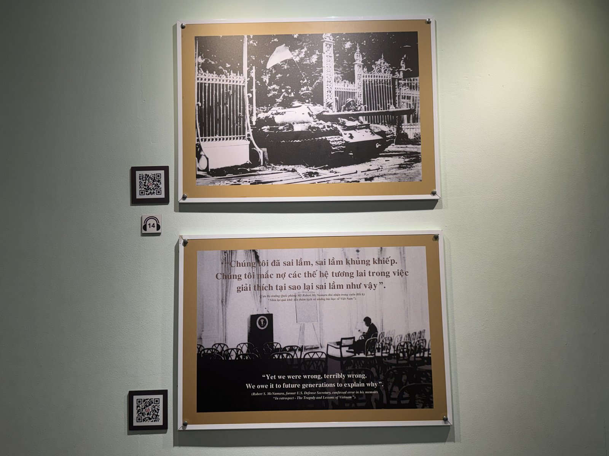

Chứng tích & Liên hệ Quốc tế
Lồng ghép tư liệu Bảo tàng Chứng tích Chiến tranh (28 Võ Văn Tần, Q.3, TP.HCM)
Tiến trình Kháng chiến Chống Mỹ & Ngày Đại thắng 30/4/1975:
Bảo tàng trưng bày chuỗi tư liệu lịch sử phản ánh các giai đoạn chuyển biến trọng đại của chiến trường miền Nam: Lễ thành lập và Đại hội lần thứ I Mặt trận Dân tộc Giải phóng miền Nam Việt Nam (1960–1962) — ngọn cờ tập hợp khối đại đoàn kết toàn dân tộc; tư liệu Tổng thống Kennedy họp bàn chiến lược "Chiến tranh đặc biệt" đưa 33 trực thăng CH-21C và vũ khí tối tân ồ ạt đến Sài Gòn (12/1961); Tổng thống Lyndon Johnson và Bộ trưởng Quốc phòng Robert McNamara leo thang "Chiến tranh cục bộ" đưa hơn nửa triệu lính viễn chinh vào miền Nam; và mốc son đỉnh cao: Bức ảnh lịch sử xe tăng quân Giải phóng húc đổ cổng Dinh Độc Lập trưa ngày 30/4/1975 giải phóng hoàn toàn miền Nam, cùng lời thú nhận sai lầm cay đắng của McNamara trong cuốn hồi ký "Nhìn lại quá khứ".



Chuyên đề "Tội ác chiến tranh", Thảm sát Mỹ Lai & Bằng chứng ném bom tàn sát:
Bảo tàng lưu giữ trang báo The Plain Dealer (20/11/1969) công bố phóng sự điều tra và bộ ảnh chấn động của Ronald L. Haeberle về Vụ thảm sát 504 thường dân Sơn Mỹ (Mỹ Lai 1968).
Cùng với đó là cụm ảnh tố cáo tội ác ném bom tàn sát dân thường (nạn nhân bom napalm Sáu Châu ở Vĩnh Long 1966, trường cấp 2 Hương Phúc bị bom sát hại 33 học sinh năm 1966, bom rải thảm B-52 Khâm Thiên 1972) và chiến dịch đốt sạch làng mạc Cẩm Lệ, san phẳng làng Bến Súc.
Đồng thời, hiện vật gốc chiếc máy chém thời Pháp được chính quyền Ngô Đình Diệm sử dụng theo Luật 10/59 lê đi khắp miền Nam tàn sát đồng bào cũng được lưu giữ trang trọng để nhắc nhở thế hệ hôm nay về cái giá máu xương của hòa bình.


Chuyên đề "Hậu quả Chất độc da cam / Dioxin":
Chiến dịch hóa học mang tên Ranch Hand do quân đội Mỹ tiến hành từ ngày 10/8/1961 đến năm 1971 đã rải xuống miền Nam Việt Nam gần 80 triệu lít chất độc hóa học, trong đó 61% là chất da cam chứa ít nhất 366 kg Dioxin nguyên chất (chất độc độc hại nhất mà con người từng biết đến).
Chất độc da cam đã hủy diệt hơn 3,1 triệu héc-ta rừng nguyên sinh, đầu độc nguồn nước và hủy hoại môi trường sinh thái của 24,6% diện tích miền Nam.
Đau lòng hơn, hơn 4,8 triệu người dân Việt Nam bị phơi nhiễm và hơn 3 triệu người là nạn nhân trực tiếp, để lại di chứng quái thai, dị tật bẩm sinh di truyền qua 3 đến 4 thế hệ.
Những hình ảnh trưng bày tại phòng Dioxin là lời nhắc nhở đanh thép về sự tàn khốc của chiến tranh phi nghĩa và ý chí vươn lên kỳ diệu của các nạn nhân da cam Việt Nam.


Chuyên đề đặc biệt: Đồng chí Nguyễn Thị Bình & Hiệp định Paris (1968–1973):
Không gian trưng bày độc bản về bản lĩnh ngoại giao của đồng chí Nguyễn Thị Bình tại Hội nghị Paris.
Hình ảnh lễ ký kết Hiệp định Paris ngày 27/1/1973 chấm dứt chiến tranh, lập lại hòa bình ở Việt Nam là mốc son chói lọi của sự kết hợp tài tình giữa đòn quân sự trên chiến trường và đòn ngoại giao quốc tế.


Chuyên đề: Thời thanh xuân trên tuyến đường 1C huyền thoại (TNXP Tây Nam Bộ):
Hình ảnh và kỷ vật chiếc xuồng ba lá, bi đông nước của hơn 800 thanh niên xung phong Tây Nam Bộ kiên cường bám trụ tuyến đường giao liên 1C, vượt mưa bom bão đạn và đầm lầy Đồng Tháp Mười, chuyển hơn 13.000 tấn vũ khí chi viện đắc lực cho Đại thắng mùa Xuân 1975.


Góc nhìn & Liên hệ Quốc tế sâu sắc
Nghệ thuật ngoại giao độc lập, tự chủ trong bối cảnh Chiến tranh Lạnh:
Thời kỳ 1954–1975, phong trào cộng sản và công nhân quốc tế xảy ra bất đồng sâu sắc giữa Đảng Cộng sản Liên Xô và Đảng Cộng sản Trung Quốc.
Trong bối cảnh phức tạp hiểm nghèo đó, Đảng ta và Chủ tịch Hồ Chí Minh đã kiên định đường lối độc lập, tự chủ, đoàn kết quốc tế; khéo léo kết hợp mục tiêu dân tộc với nghĩa vụ quốc tế cao cả;
tranh thủ tối đa sự giúp đỡ to lớn và chí tình của cả Liên Xô (viện trợ tên lửa phòng không SAM-2, máy bay tiêm kích MiG-21, radar, xe tăng T-54) và Trung Quốc (súng đạn, pháo phòng không, gạo, quân trang, bảo đảm tuyến đường vận tải phía Bắc),
cùng sự đồng tình ủng hộ của các nước XHCN anh em, tạo nên sức mạnh tổng hợp đánh thắng đế quốc Mỹ.
Phòng trưng bày "Thế giới ủng hộ Việt Nam kháng chiến" tại Bảo tàng:
Bảo tàng lưu giữ bộ sưu tập vô giá với hàng trăm bức ảnh, áp phích, tranh cổ động của nhân dân hơn 50 quốc gia trên thế giới phản đối chiến tranh của Mỹ tại Việt Nam.
Khẩu hiệu "Việt Nam — Hồ Chí Minh" vang dội trên đường phố Paris, London, Tokyo, Berlin, Stockholm, Havana...
Tại chính nước Mỹ, làn sóng phản chiến bùng nổ dữ dội chưa từng có trong lịch sử nước Mỹ: Phong trào sinh viên các trường Đại học Kent, Berkeley;
hành động tự thiêu quả cảm của công dân Mỹ Norman Morrison (ngày 2/11/1965 trước cửa sổ Lầu Năm Góc) để phản đối chiến tranh xâm lược;
Tòa án quốc tế Bertrand Russell (1967) xét xử tội ác chiến tranh của Mỹ.
Đây chính là Mặt trận nhân dân thế giới đoàn kết ủng hộ Việt Nam — một nhân tố thắng lợi có ý nghĩa chiến lược của cách mạng nước ta.
Tầm vóc và Ý nghĩa thời đại to lớn:
Đại hội đại biểu toàn quốc lần thứ IV của Đảng (12/1976) đã khẳng định: "Năm tháng sẽ trôi qua, nhưng thắng lợi của nhân dân ta trong sự nghiệp kháng chiến chống Mỹ, cứu nước mãi mãi được ghi vào lịch sử dân tộc ta như một trong những trang chói lọi nhất, một biểu tượng sáng ngời về sự toàn thắng của chủ nghĩa anh hùng cách mạng và trí tuệ con người, và đi vào lịch sử thế giới như một chiến công vĩ đại của thế kỷ XX, một sự kiện có tầm quan trọng quốc tế to lớn và có tính thời đại sâu sắc". Thắng lợi ấy đã phá vỡ phòng tuyến ngăn chặn chủ nghĩa cộng sản của Mỹ ở Đông Nam Á, cổ vũ mạnh mẽ các dân tộc bị áp bức vùng lên đấu tranh vì hòa bình, độc lập và tiến bộ xã hội.